7.8 Advance
7.8.1 ggplot Customization
g = ggplot(data = my.df, aes(x=dept, fill=grp)) + geom_bar()7.8.1.1 Changing Title, Subtitle, Caption and Labels
Title and Subtitle
g + ggtitle('This Is Important Chart')
g + labs(title='This Is Another Way To Set Main Title', subtitle='Another Subtitle')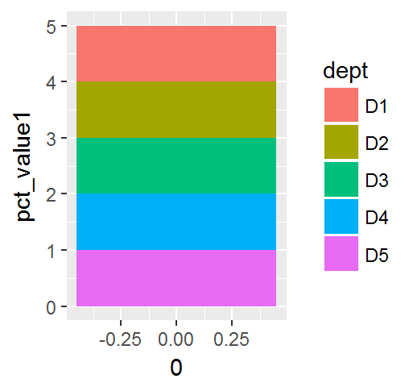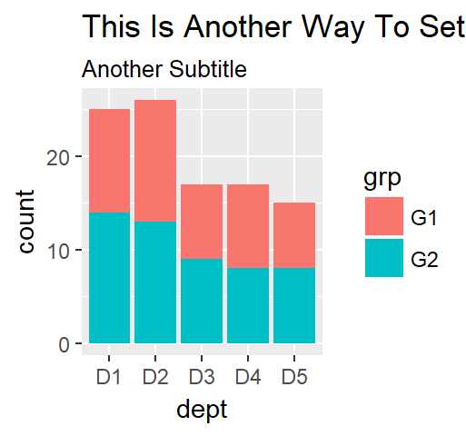
Axis Label
g + xlab('My X Axis')
g + ylab('My Y Axis')
g + labs(x='My New X Axis Label', y='My New Y Axis Label')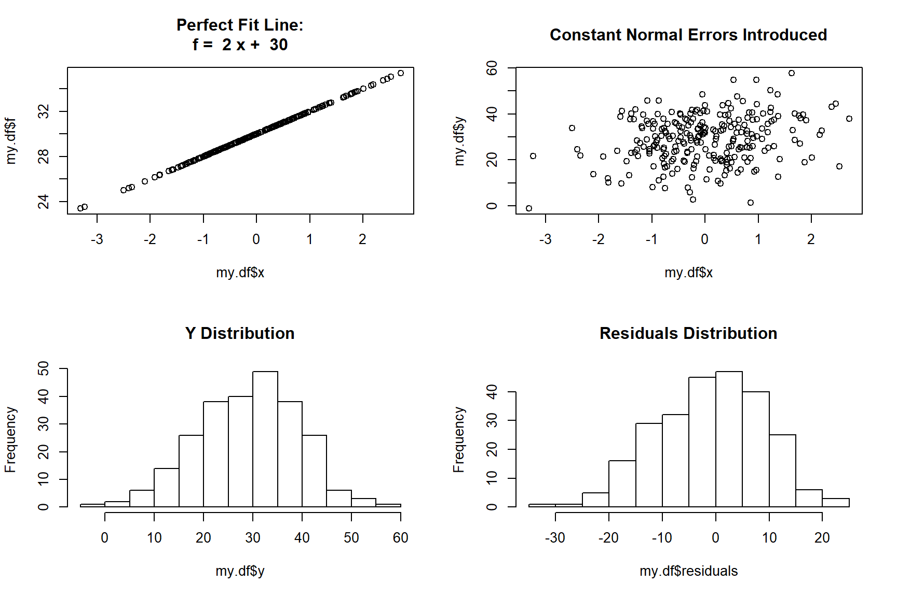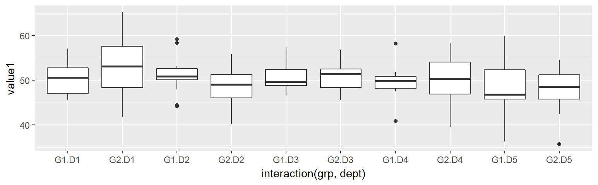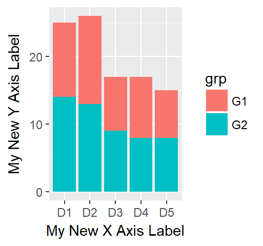
Caption
g + labs(caption = "(based on data from ...ABC)")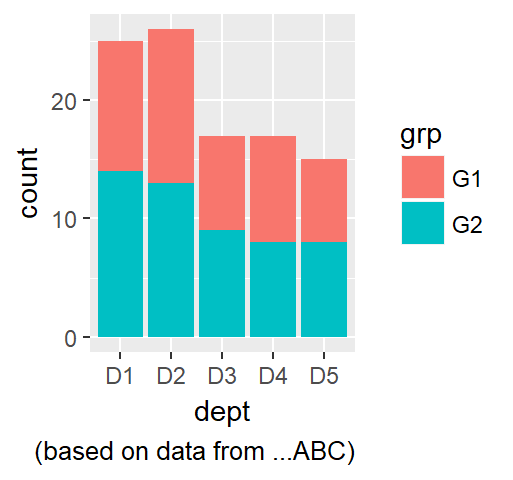
7.8.1.2 Changing Axis Scale and Ticks
Simple Method
- xlim and ylim is a quick way to set axis limit
- Beware that setting limits too low will discard observations that beyonds the limit
g + ylim(0,40)
g + xlim('D3','D2','D5')## Warning: Removed 42 rows containing non-finite values (stat_count).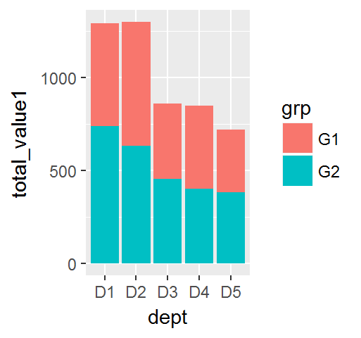
Comprehensive Method with label and breaks
- scale_ is a combination way to set limits, at the same time setting label and breaks, however, it is slightly complex in syntax - Beware that setting limits too low will discard observations that beyonds the limit
- Use continous for number, use discrete for categorical
g + scale_y_continuous('Another Y Label', limits=c(0,40), breaks=seq(0,50,by=5))
g + scale_x_discrete ('Another X Label', limits=c('D3','D2','D5'))## Warning: Removed 42 rows containing non-finite values (stat_count).
7.8.1.3 Customize Components
- axis.title changes both axis.title.x and axis.title.y
- axis.text changes both axis.text.x and axis.text.y
- axis.ticks changes both axis.ticks.x and axis.ticks.y
g + labs(title='Main Title', subtitle='My Subtitle', caption='(sourced form ABC)') +
theme(
plot.title = element_text (face = "bold", color = 'orange', size = 12.5),
axis.title.x = element_text (face = "bold", color = 'blue', size = 12.5),
axis.title.y = element_text (face = "bold", color = 'red', size = 12.5),
axis.text.x = element_text (face = 'bold', color = 'red', size = 10.0, angle = (90), hjust = 1, vjust = 0.5),
axis.text.y = element_text (face = 'bold', color = 'blue', size = 10.0),
axis.ticks = element_line (color = 'green', size = 5, linetype = 5),
axis.line = element_line (color = 'grey', size = 2, linetype = 3)
)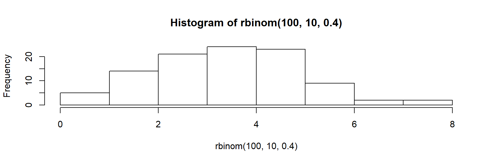
7.8.1.4 Clearing Components
# Hide x an y axis tick mark labels
g + theme(
axis.text.x = element_blank(),
axis.text.y = element_blank())
# Remove axis ticks and tick mark labels
g + theme(
axis.text.x = element_blank(),
axis.text.y = element_blank(),
axis.ticks = element_blank())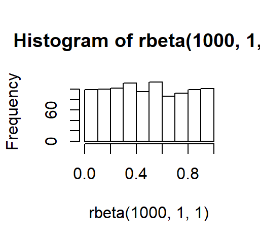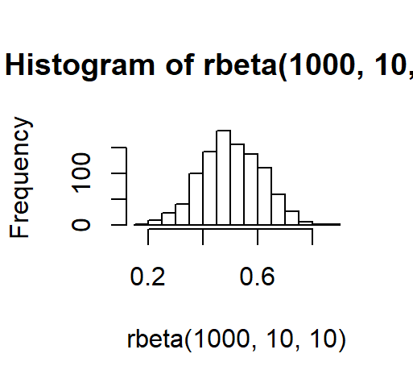
7.8.1.5 Themes
ggplot comes with several great themes to quickly set the appearance of the plot. Difference are the background and grid styles.
g + theme_gray() + ggtitle('theme_gray') # default
g + theme_bw() + ggtitle('theme_bw')
g + theme_linedraw() + ggtitle('theme_linedraw')
g + theme_light() + ggtitle('theme_light')
g + theme_dark() + ggtitle('theme_dark')
g + theme_classic() + ggtitle('theme_classic')
g + theme_minimal() + ggtitle('theme_minimal')
g + theme_void() + ggtitle('theme_void')
 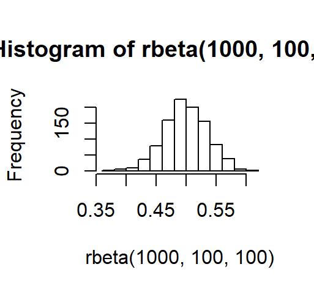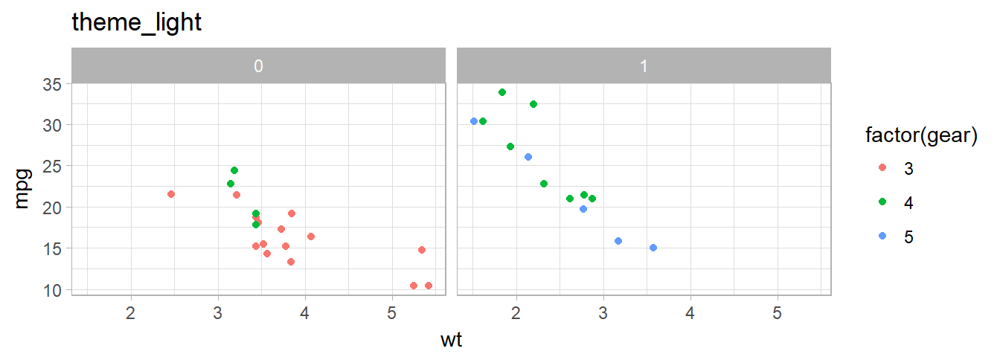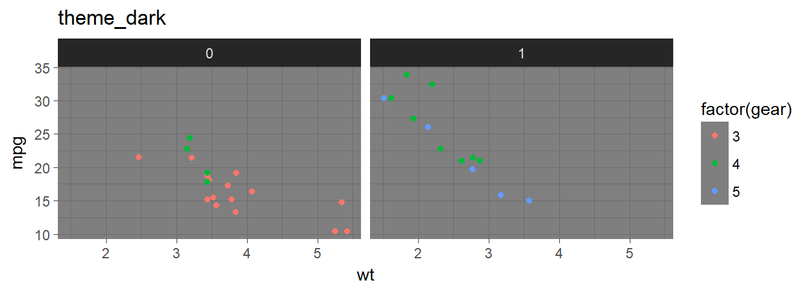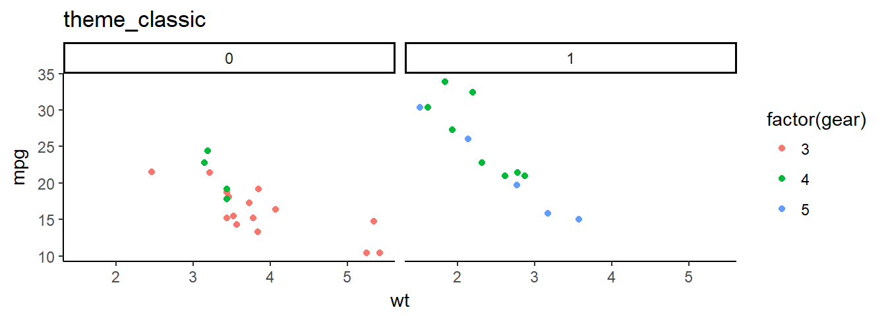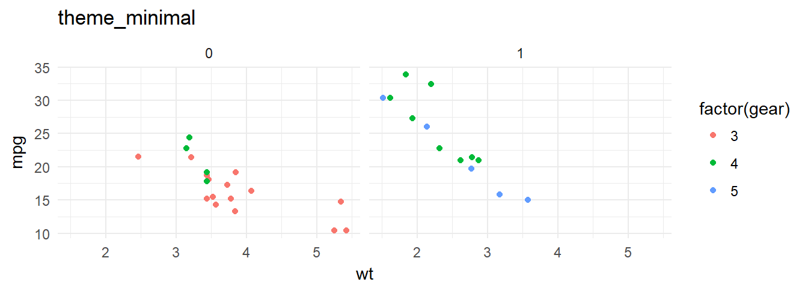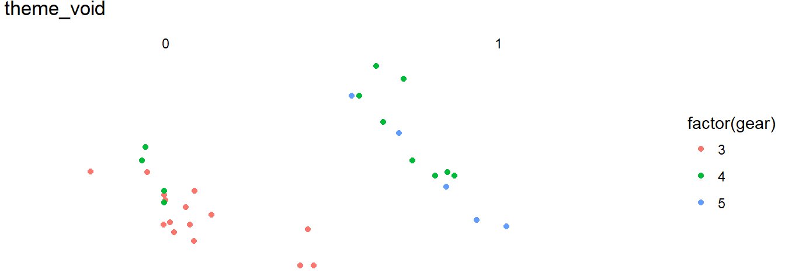
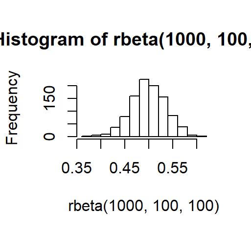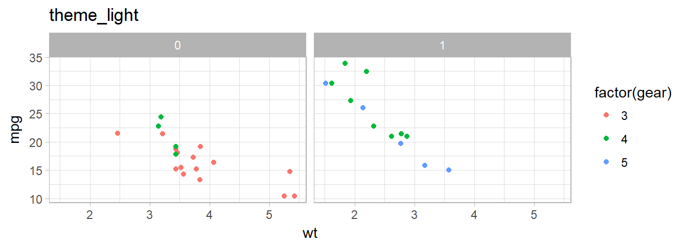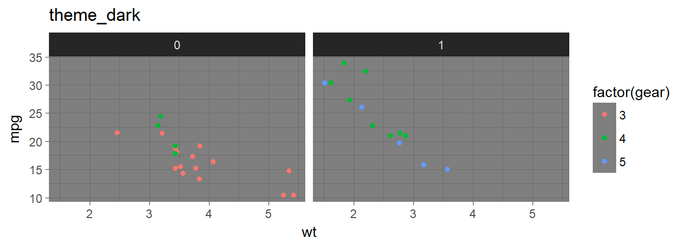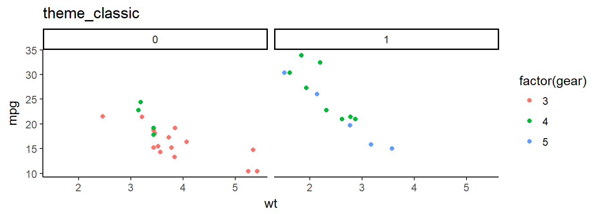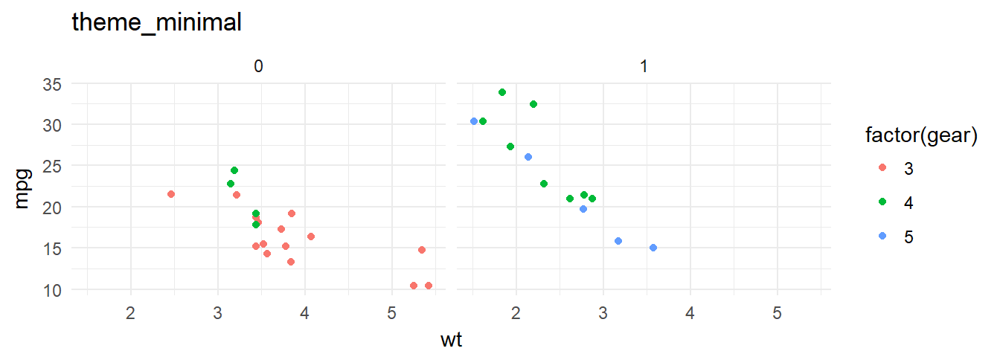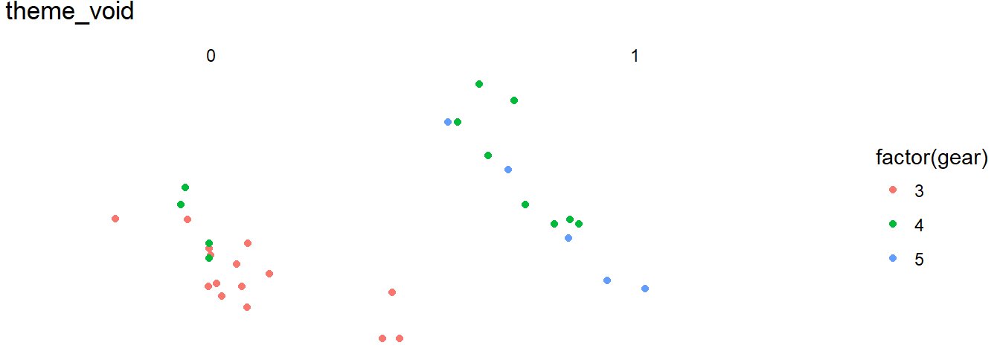
7.8.2 Base Graphics
7.8.2.1 Double Y-Axis Scale
## set up some fake test data
time <- seq(0, 72, 12)
betagal.abs <- c(0.05, 0.18, 0.25, 0.31, 0.32, 0.34, 0.35)
cell.density <- c(0, 1000, 2000, 3000, 4000, 5000, 6000)
## add extra space to right margin of plot within frame
par(mar = c(5, 4, 4, 6) + 0.5)
## Plot first set of data and draw its axis
plot(time, betagal.abs, pch = 16, axes = FALSE, ylim = c(0, 1), xlab = "", ylab = "",
type = "b", col = "black", main = "Mike's test data")
axis(2, ylim = c(0, 1), col = "black", las = 1) ## las=1 makes horizontal labels
mtext("Beta Gal Absorbance", side = 2, line = 2.5)
box()
## Allow a second plot on the same graph
par(new = TRUE)
## Plot the second plot and put axis scale on right
plot(time, cell.density, pch = 15, xlab = "", ylab = "", ylim = c(0, 7000),
axes = FALSE, type = "b", col = "red")
## a little farther out (line=4) to make room for labels
mtext("Cell Density", side = 4, col = "red", line = 4)
axis(4, ylim = c(0, 7000), col = "red", col.axis = "red", las = 1)
## Draw the time axis
axis(1, pretty(range(time), 10))
mtext("Time (Hours)", side = 1, col = "black", line = 2.5)
## Add Legend
legend("topleft", legend = c("Beta Gal", "Cell Density"),
text.col = c("black", "red"), pch = c(16, 15), col = c("black", "red"))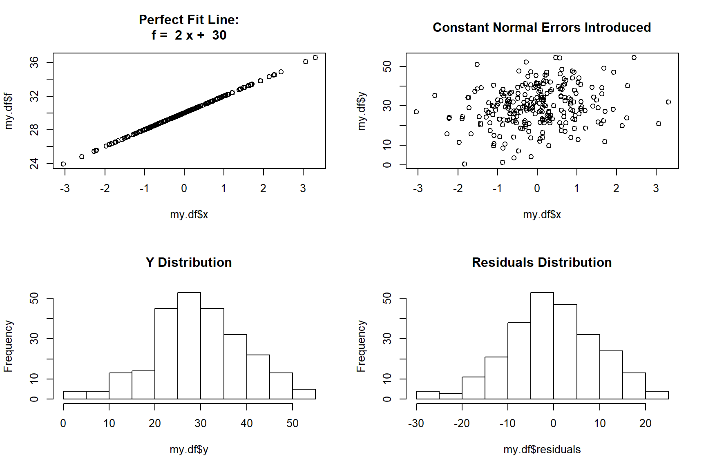